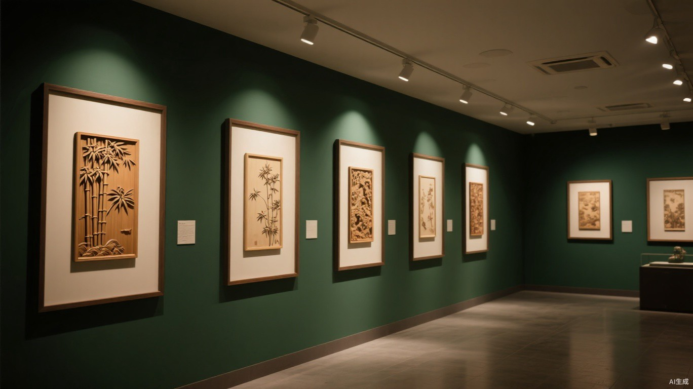
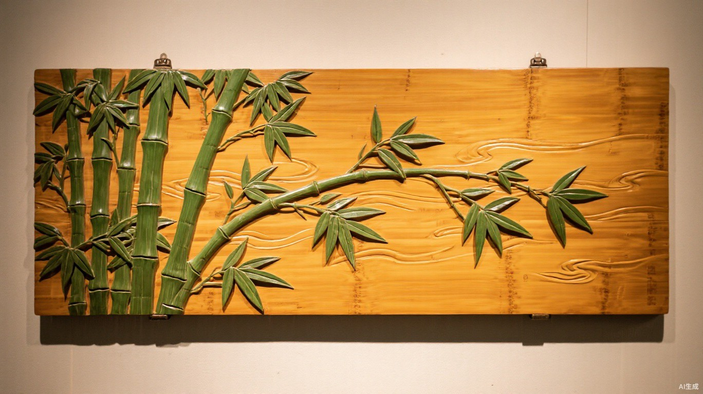
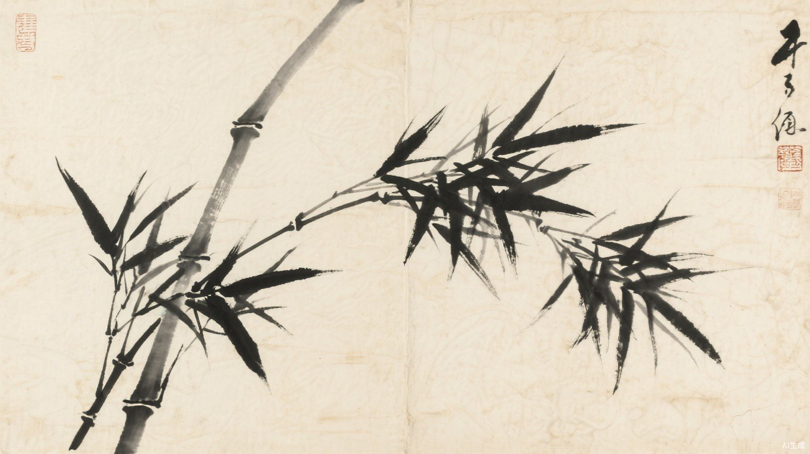

留 青 竹 刻 的 艺 术 之 美
DIGITAL GALLERY · 点击作品，细赏其美
INK PAINTING VS BAMBOO CARVING
留青竹刻与中国画血脉相连：画稿是骨，刀法是笔。左右拖动下面的滑杆， 看同一幅墨竹，在纸上与在竹上，各自如何生长。


THE ART OF KEEPING & REMOVING
青筠尽留，图纹饱满，如浓墨重彩
留其大半，色浓而润，层次渐出
留其少半，清疏淡远，似墨分五色
仅留薄意，若有若无，空灵之至
青筠尽去，露出竹肌，以为地子